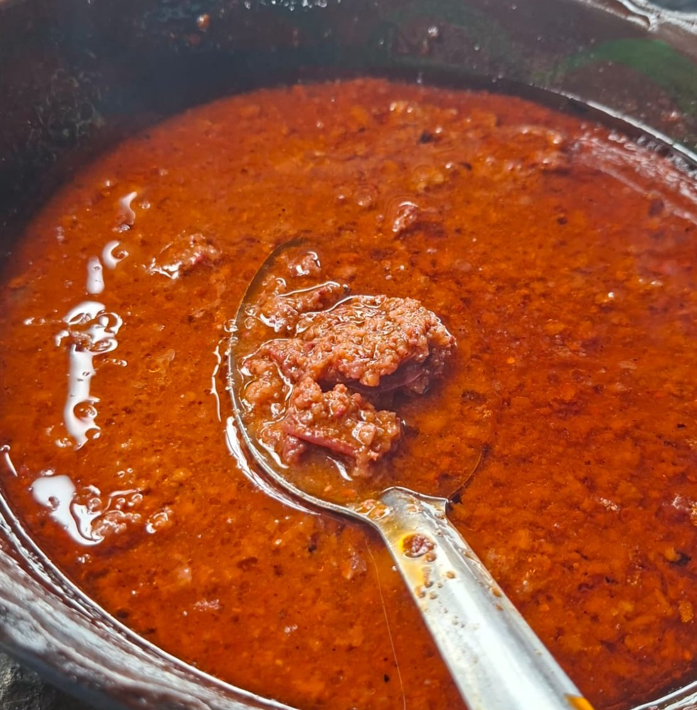

La longaniza en chile guajillo es un platillo tradicional mexicano de sabor intenso y ligeramente picante. La combinación de la longaniza dorada con la salsa de chile guajillo crea un guiso ideal para acompañar con arroz, frijoles o tortillas recién hechas